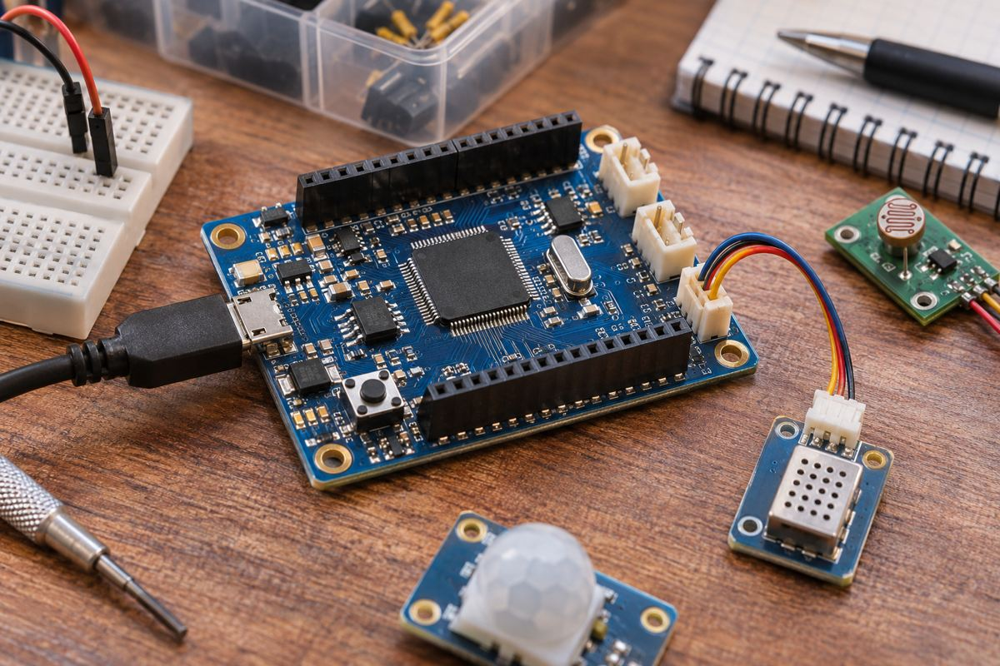

전자기기 / EXPLAINED
Arm Cortex-M42 공개…작은 기기에서 신호 처리와 AI 연산 강화
Cortex-M33 대비 벡터 처리 수치를 제시했다. 완성 칩과 기기의 판매 일정은 별도 단계다.

Arm은 11월 10일 Cortex-M42 프로세서 설계를 Flexible Access와 Total Access 포트폴리오에 추가한다고 발표했다. 비용과 칩 면적에 민감한 기기에서 기계학습과 디지털 신호 처리를 강화하는 것이 목표다. 회사는 Cortex-M33과 비교해 벡터 연산 능력 최대 3배, 벡터 연산의 전력 효율 최대 2배를 제시했다. 이는 특정 연산 범위의 회사 비교치이며 모든 프로그램의 전체 속도나 배터리 시간이 같은 비율로 늘어난다는 의미는 아니다.
Arm은 최종 소비자용 기기를 직접 판매하는 업체라기보다 반도체 회사가 칩에 넣는 프로세서 설계를 제공한다. Cortex-M은 센서를 읽고 장치를 제어하는 마이크로컨트롤러에 쓰이는 계열이다. 프로세서 설계가 공개된 뒤 칩 업체가 메모리와 주변 회로, 제조 공정을 정하고 완성 칩을 만들어야 실제 보드나 제품으로 이어진다. 발표일을 곧바로 소매 칩 판매일로 읽으면 개발 단계의 차이를 놓치게 된다.
Cortex-M42는 Armv8.1-M 구조에 Helium을 결합하고 AHB 기반의 작은 설계를 사용한다. Helium은 여러 데이터에 비슷한 계산을 적용하는 벡터 처리 기능을 제공한다. 오디오의 연속 샘플이나 센서 묶음을 다루는 작업에서 이런 구조를 활용할 수 있다. 반면 데이터 이동이나 외부 장치 대기 시간이 큰 프로그램에서는 벡터 계산만 빠르게 해도 전체 동작이 같은 비율로 변하지 않는다. 실제 작업의 어디에 시간이 쓰이는지 확인해야 성능 비교가 의미를 갖는다.
Arm은 웨어러블 오디오와 키워드 감지, 산업 장치의 센서 분석과 상태 감시를 활용 예로 들었다. 로봇 모터나 관절의 이상 징후를 가까이에서 분석하는 기능도 제시했다. 다만 회사는 이 예를 안전 필수 동작 제어와 구분했다. 모터 소리를 듣고 마모 징후를 찾는 기능과 즉시 정지해야 할 때 안전하게 멈추는 제어는 검증 조건이 다르다. 프로세서가 AI 계산을 지원한다는 점만으로 완성 장치의 기능 안전이 보장되지는 않는다.
설계 접근 프로그램의 숫자
11월 기준 Flexible Access는 활동 회원 319곳, 고유 테이프아웃 500건 이상을 기록했다. Total Access는 파트너 60곳, 누적 프로젝트 600건 이상이다. 테이프아웃은 설계 데이터를 제조로 넘기는 단계이고, 프로젝트 수와 출하 제품 수는 다른 지표다. 이 숫자들은 프로그램의 이용 규모를 보여 주며 M42를 채택한 기기 수로 읽을 수 없다. M42의 구체적인 상용 칩과 소비자 제품 목록은 이번 자료에 없다.
예를 들어 음성 키워드를 감지하는 기기를 비교할 때는 같은 음원과 인식 모델, 샘플링 속도를 써야 한다. 처리 시간과 전력뿐 아니라 인식 결과가 유지되는지 함께 봐야 계산 효율의 의미를 판단할 수 있다. 이번 발표는 그런 완성 기기별 결과표를 제공하지 않았다.
편집부의 해석으로는 기존 M4·M33 설계를 확장하려는 반도체 회사가 검토할 연산 선택지가 늘었다는 데 의미가 있다. 실제 효과는 칩의 메모리 구조와 클록, 소프트웨어 최적화와 센서 처리량에 달려 있다. 보드 개발자는 자신의 응용을 지원하는 완성 칩과 도구가 나오는 시점을 확인해야 한다. 발표에 없는 가격이나 배터리 개선 수치를 예상으로 채우기보다 동일 작업과 전력 조건에서 측정한 자료를 기다릴 필요가 있다.